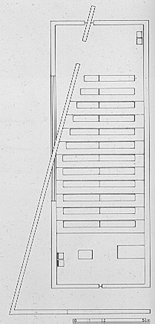

A House in East Hampton, United States Charles Gwathmey, Robert
Siegel and Associates
Country Houses
Telleri |
This house used to be an 18th-century farm,
but it has turned into a modern residence. During the reconstruction
old posts and beams have been kept and traditional materials
like wooden shingles for the roof have been used. On the picture
on the right the double-height living room can be seen. According
to the large window which can be opened totally, the room is
very bright with nice views to the landscape. The upper rooms
overlook the living room through indoor windows. |
|
Regional Technical College Library, Cork, Ireland
De Blacam and Meagher
Library Buildings
Academy Editions |
The brick facade of the library arcs around
an open space at the arrival point of a campus. The architects
have given the provision of daylight in the building much importance.
Each area in the building has its own characteristics. Some have
views to the open air, other to the interior or are totally enclosed
and private. The photograph on the right shows the interior with
its natural materials like brick and wood. A big vertical window
at the end of the corridor gives a view to the outside and provides
for natural light.
|
|
L.A. Louver Gallery, Venice, California, 1994
Frederick Fisher
Frederick Fisher, ARCHITECT
Joseph Giovannini and Marie-Claude Beaud
1995 Rizzoli International Publications, Inc |
The gallery is composed out of minimal forms
with neutral colours, so the building becomes a backdrop for
its art-program. To maintain orientation throughout the building,
skylight and selective views were introduced. On the picture
on the right you see daylight coming through a window in the
left wall and the ceiling. All though the daylight is coming
mostly from one direction the distribution of light is almost
equable due to the additional electric spots in the ceiling. |
|
Church of the Light, Ibaraki, Osaka, 1987-1989
Tadao Ando

GA Architects 12, Tadao Ando Vol. 2 1988-1993
A.D.A. EDITA Tokyo |
This chapel stands in a quiet residential
suburb of Osaka. The main form the building consists of is a
rectangular volume. A freestanding wall slides at a 15 degree
angle through the form and divides the church in a chapel and
a small entry-space as can be seen on the left picture. The horizontal
and vertical openings seen on the right picture form a cross
of daylight symmetrically with the chapel.
|
|
|
|
|
|
|
|
|
|
|
|
|
|